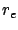

Siguiente: Propagación sobre Tierra plana
Subir: Propagación sobre una superficie
Anterior: Propagación sobre una superficie
Índice General
Propagación sobre Tierra esférica
La figura 3.1 muestra la situación de dos antenas
mutuamente visibles sobre una Tierra de radio efectivo .
Figura 3.1:
Dos antenas visibles mutuamente sobre la Tierra esférica
de radio efectivo
|
|
Las alturas de las antenas sobre la superficie de la Tierra son
 y
y  , y las alturas sobre el plano tangente en el punto de
reflexión son y respectivamente. De esta forma, se
obtiene como resultado de relaciones geométricas la siguiente
expresión:
, y las alturas sobre el plano tangente en el punto de
reflexión son y respectivamente. De esta forma, se
obtiene como resultado de relaciones geométricas la siguiente
expresión:
y análogamente:
Utilizando las ecuaciones (3.4) y (3.5) se obtiene:
El punto de reflexión, donde los dos ángulos  son iguales, se
puede determinar tomando en cuenta que dado
, el
ángulo (en radianes) estará dado por:
son iguales, se
puede determinar tomando en cuenta que dado
, el
ángulo (en radianes) estará dado por:
Entonces:
Combinando la relación
con las ecuaciones
(3.6) y (3.7) es posible formular la
siguiente ecuación cúbica en  :
:
La solución de esta ecuación se puede hallar con métodos estándar
comenzando por la aproximación
Para calcular la intensidad del campo en el punto de recepción, se
asume normalmente que la diferencia entre la longitud de camino
entre la onda directa y la reflejada no afecta en forma
significativa la atenuación, pero debe ser considerada la diferencia
de fase entre ambos caminos. La longitud del camino directo es
y la longitud del camino reflejado es
La diferencia
es
y si
se reduce a
La diferencia de fase correspondiente es
Si la intensidad del campo en la antena receptora debido a la onda
directa es , entonces el campo total recibido es
donde es el coeficiente de reflexión de la Tierra
(
). En la práctica, la Tierra no es ni un
conductor ni un dieléctrico perfecto, por lo tanto el coeficiente de
reflexión depende de las constantes del terreno, en particular, de
la constante dieléctrica
y de la conductividad
 .
Entonces,
.
Entonces,
Esta ecuación se puede utilizar para calcular la intensidad de campo
recibida en cualquier punto, pero hay que tener en cuenta que la
curvatura de la Tierra esférica produce una cierta divergencia de la
onda reflejada. Este efecto puede ser tenido en cuenta utilizando en
la ecuación (3.9) un valor de que difiera del usado
para la reflexión en una superficie plana; la modificación apropiada
consiste en multiplicar dicho valor por un factor de divergencia
D dado por:
El valor de D puede ser del orden de 0.5, por lo cual el
efecto de la onda reflejada en la Tierra se reduce
considerablemente.
Siguiente: Propagación sobre Tierra plana
Subir: Propagación sobre una superficie
Anterior: Propagación sobre una superficie
Índice General
SAPO